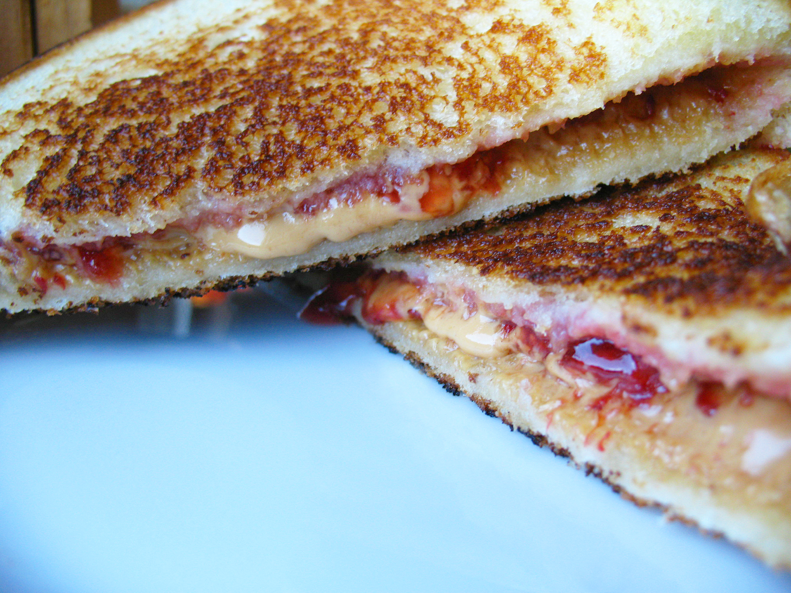

Grilled Peanut Butter & Jelly Sandwiches

Super tasty and easy to make grilled P B & J's
Yum Yum PB&J in my Tum Tum
Ingredients
- Peanut Butter
- Jelly
- Bread
Steps
- Spread approximately 2 tablespoons of peanut butter on a slice of bread
- Spread approximately 2 tablespoons of jelly on another slice of bread
- Place butter in pan
- Cook both sides of sandwich until crispy